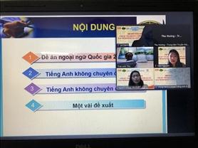

Tin tức Covid-19
"Hà Nội: Ổ dịch tại phường Phú Đô có 57 ca dương tính SARS-CoV-2, đề nghị nâng cấp độ 4 một khu vực"
Ổ dịch tại phường Phú Đô, Nam Từ Liêm (Hà Nội) có 57 ca dương tính SARS-CoV-2. Lực lượng chức năng đã phong toả 1352 người dân tại 3 tổ dân phố.
Sở Y tế TP.HCM ra văn bản khẩn chấn chỉnh việc quản lý, chăm sóc F0 tại nhà
Sở Y tế TP HCM yêu cầu tất cả trường hợp F0 đang cách ly tại nhà và cơ sở cách ly trên địa bàn phải được cấp phát túi thuốc điều trị Covid-19 trong vòng 24 giờ kể từ khi tiếp nhận. Túi thuốc điều trị Covid-19 tại nhà phải đúng thành phần theo hướng dẫn
"Loạn" giá xét nghiệm: Có lợi ích nhóm hay không?
Hàng loạt câu hỏi kèm theo tranh luận về “loạn” giá xét nghiệm, cách ly F1 được các đại biểu đưa ra khi chất vấn Bộ trưởng Bộ Y tế Nguyễn Thanh Long, ngày 10/11.
Tin tức Công Nghệ
"Review Laptop gaming 2021 xịn nhất mọi thời đại"
Thị trường laptop gaming vào thời điểm hiện tại đang rất “hot”, đặc biệt trong phân khúc desktop gaming không mắc, nếu bạn có khoảng 20 triệu đồng thì trong năm 2021 sẽ có rất nhiều những chiếc laptop gaming “ngon” cho bạn chọn lựa. tuy nhiên đâu mới là chiếc desktop phù hợp nhất với bạn? Hôm nay, Phúc Anh sẽ giới thiệu 05 mẫu laptop gaming giá rẻ, có hiệu năng tốt nhất với mức giá khoảng 20 triệu đồng cho bạn tham khảo.
ASUS ROG Zephyrus S17 – Một trong những laptop gaming hoàn hảo nhất của nhà ROG Zephyrus trong 2021
Bên cạnh hiệu năng tản nhiệt mạnh mẽ, Zephyrus S17 còn có các tính năng xịn sò và được trang bị đầy đủ các món ăn chơi để game thủ có thể đắm chìm trong thế giới ảo. Mời các bạn cùng bọn mình xem qua những điểm nổi bật của chiếc laptop gaming đình đám này nhé.
ASUS trình làng ROG Flow X13 và loạt laptop gaming siêu đỉnh tại sự kiện CES 2021
Dải sản phẩm laptop gaming của ASUS ROG sử dụng bộ xử lý AMD Ryzen 5000 Series và đồ họa NVIDIA GeForce RTX 3000 Series thế hệ mới, cấu hình được đánh giá là "khủng long" thời điểm này.
Tin tức trường đại học Kinh Doanh và Công Nghệ
Lễ gặp mặt chào Tân sinh viên K26 của Khoa Tài chính
Thực hiện kế hoạch hoạt động năm học, chiều ngày 29/10/2021 Khoa Tài chính tổ chức chương trình “Lễ gặp mặt chào Tân sinh viên K26” trên nền tảng trực tuyến Zoom Meeting.
Hội thảo khoa học “Giảng dạy tiếng Anh không chuyên ở bậc đại học và tại Đại học Kinh doanh và Công nghệ Hà Nội”
Ngày 28/10/2021, được sự đồng ý của Ban Giám hiệu Trường ĐH Kinh doanh và Công nghệ Hà Nội, Khoa tiếng Anh B tổ chức Hội thảo khoa học với chủ đề: “Giảng dạy tiếng Anh không chuyên ở bậc đại học và tại Đại học Kinh doanh và Công nghệ Hà Nội” theo hình thức trực tuyến.
Thư kêu gọi Tình nguyện tham gia Đội phòng, chống dịch Covid-19
Tin Tức bóng đá
Pogba dính chấn thương nặng hại sự nghiệp, "ê mặt" xin MU cho ở lại
Pogba từng đưa ra yêu sách về hợp đồng mới với Man United nhưng sau khi dính chấn thương mới đây, tiền vệ người Pháp có lẽ đã nhún nhường hơn trong việc quyết định về tương lai.
Nhận định, dự đoán Australia vs Saudi Arabia, 16h10 ngày 11/11: Ngày trở về đáng nhớ
Sau 2 năm phải đi mượn sân trung lập làm sân nhà tạm thời, ĐT Australia sẽ có lần đầu tiên được thi đấu tại quê nhà. Trong ngày đáng nhớ này, rõ ràng họ không muốn phung phí lợi thế sân bãi của mình.